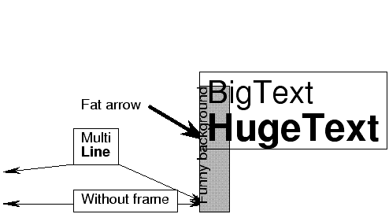

| PyChart |
| PyChart |
The amount of space below the last line
Specifies the fill style of the text box.
The amount of space left of the box
The line style of the surrounding frame.
The location of the text box.
Radius of the four corners of the rectangle. If the value is zero, a sharp-cornered rectangle is drawn.
The amount of space right of the box
The value is either None or a tuple. When non-None, a drop-shadow is drawn beneath the object. X-off, and y-off specifies the offset of the shadow relative to the object, and fill specifies the style of the shadow ( see Section 16).
Text body. See Section 17
The amount of space (in points) above the first line
In addition to the above attributes, this class provides the following methods.
| tip, tail=None, arrow=arrow.default) |
'l', 'c', 'r', 't', 'm,', 'b'
Letters 'l', 'c', or 'r'
means to start the arrow from the left, center, or right of the text
box, respectively. Letters 't', 'm', or 'b' means to start the arrow
from the top, middle or bottom of the text box. For example, when
tail = 'tc' then arrow is drawn from top-center point of the text
box. Parameter arrow specifies the style of the arrow.
See Also:
Section 19 for arrows.
Annotations example
Below is the source code that produces the above chart. ../demos/annotations.py
from pychart import * tb = text_box.T(loc=(100,100), text="Without frame") tb.add_arrow((50, 100)) tb.add_arrow((180, 100)) tb.draw() tb = text_box.T(loc=(100,130), text="/hCMulti\n/bLine") tb.add_arrow((50, 120)) tb.add_arrow((180, 100)) tb.draw() tb = text_box.T(loc=(100,160), text="Fat arrow", line_style=None) tb.add_arrow((180, 140), tail='rm', arrow = arrow.fat1) tb.draw() text_box.T(loc=(180, 100), text="/a90Funny background", fill_style = fill_style.gray70).draw() text_box.T(loc=(180, 140), text="/hL/20Big/oText\n/24/bHuge/oText", fill_style = None).draw()
| PyChart |